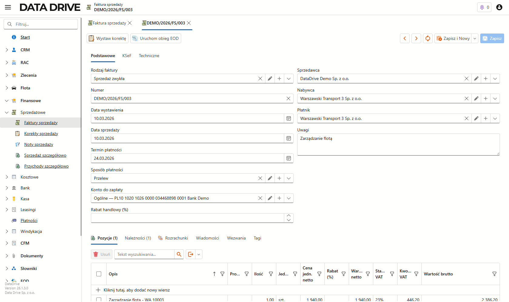
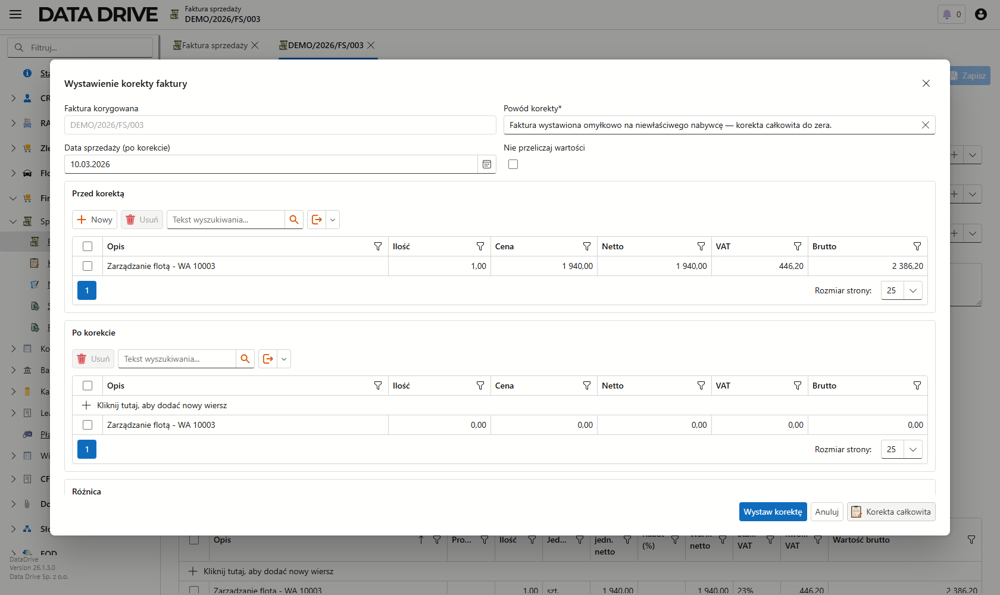
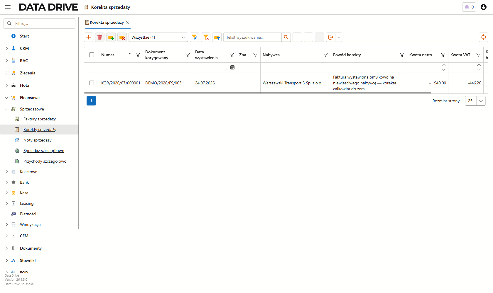

Korekty sprzedaży
Korekta poprawia wystawioną fakturę bez jej kasowania. Wskazujesz dokument, podajesz powód i zmieniasz wartości, a aplikacja tworzy osobny dokument korygujący, który pokazuje stan przed korektą, po korekcie i samą różnicę. Faktura pierwotna zostaje nietknięta, a ślad zmiany jest jawny.
O module korekt
Korekty znajdziesz w lewym menu, w grupie Finansowe → Sprzedażowe → Korekty sprzedaży. Korekty nie zakładasz jednak od zera — wystawiasz ją wprost z faktury, którą chcesz poprawić. Dokument korygujący dostaje własny numer z serii KOR i trwale wskazuje fakturę, której dotyczy.
Kiedy wystawiasz korektę
Po korektę sięgasz zawsze, gdy wystawiona już faktura przestała odpowiadać rzeczywistości. Typowe sytuacje to:
- klient zwrócił część usługi lub towaru i trzeba obniżyć ilość albo wartość,
- udzieliłeś rabatu już po wystawieniu faktury,
- na fakturze trafił się zły nabywca lub błędna cena,
- zmieniła się data sprzedaży.
W każdym z tych przypadków faktura pierwotna zostaje, a różnicę dokumentuje korekta.
Wystawienie korekty z faktury
Korektę uruchamiasz jedną akcją z poziomu faktury. W przykładzie poprawiamy fakturę DEMO/2026/FS/003, wystawioną omyłkowo na niewłaściwego nabywcę.

Aby rozpocząć korektę, wykonaj następujące kroki:
- Otwórz wystawioną fakturę z listy Faktury sprzedaży albo zaznacz ją na liście.
- Na górnym pasku kliknij Wystaw korektę.
Otworzy się okno Wystawienie korekty faktury z pozycjami przepisanymi z faktury.
Okno korekty
Okno korekty pokazuje trzy widoki tych samych pozycji: Przed korektą (wartości z faktury, tylko do odczytu), Po korekcie (wartości docelowe, które edytujesz) oraz Różnica (to, o co zmienia się dokument). Na górze podajesz powód, a w razie potrzeby nową datę sprzedaży.

Aby wystawić korektę, wykonaj następujące kroki:
- W polu Powód korekty wpisz, dlaczego poprawiasz fakturę. To pole jest wymagane.
- W siatce Po korekcie popraw wartości docelowe — na przykład zmniejsz Ilość albo Cenę pozycji. Aby wycofać całą fakturę, kliknij Korekta całkowita, a wszystkie pozycje wyzerują się naraz.
- Jeśli korygujesz tylko datę sprzedaży, ustaw ją w polu Data sprzedaży (po korekcie) i nie ruszaj pozycji.
- Kliknij Wystaw korektę.
Aplikacja utworzy dokument korygujący, nada mu numer z serii KOR i zapisze różnicę względem faktury pierwotnej. Siatka Różnica pokazuje tę zmianę jeszcze przed zapisem, więc widzisz, o ile realnie zmienia się dokument.
Lista korekt
Wystawione korekty zbiera ekran Korekty sprzedaży. Każdy wiersz wskazuje fakturę, której dotyczy, oraz kwoty zmiany — przy zmniejszeniu wartości są one ujemne.

- Numer
- Numer korekty z osobnej serii, na przykład KOR/2026/07/000001. Nie miesza się z numeracją faktur.
- Dokument korygowany
- Faktura, której dotyczy korekta. Wiąże oba dokumenty na stałe.
- Powód korekty
- Uzasadnienie zmiany, które wpisałeś w oknie korekty.
- Kwota netto, Kwota VAT
- Wartość korekty, czyli różnica względem faktury. Przy obniżeniu lub wycofaniu sprzedaży kwoty są ujemne.